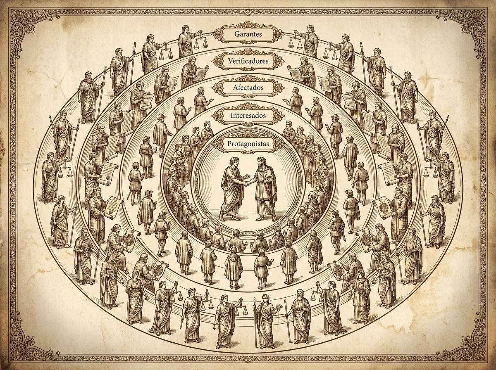

Subpunto 1.2.1 · La perspectiva de las relaciones jurídicas
Nunca hay solo dos partes
Los manuales presentan la relación jurídica como un vínculo entre dos: acreedor y deudor, actor y demandado. Sánchez de la Torre sostiene que esa imagen es demasiado pobre para describir lo que realmente ocurre, y propone contar cinco posiciones distintas. Quien solo ve dos, pierde de vista a los que deciden el resultado.
Prof. Carlos Eduardo Chica-Villacís Docente autor · Universidad Católica de Cuenca
La relación jurídica suele presentarse como una definición de manual: un vínculo regulado por normas que conecta a dos sujetos de derecho. Cárdenas Gracia, exponiendo la definición clásica de Legaz Lacambra, la precisa como un vínculo creado por normas entre sujetos de derecho, nacido de un hecho determinado, que origina situaciones correlativas de facultades y deberes cuyo objeto son prestaciones garantizadas por una sanción.
Hasta ahí, técnica. Lo filosófico aparece cuando se pregunta de dónde salió esa estructura y para qué se construyó.
Sánchez de la Torre explica que consolidar la relación jurídica como concepto formal invariable no fue un ejercicio académico: nació de la necesidad de proteger a los ciudadanos frente al arbitrio de los gobernantes. Al definir constantes invariables de la experiencia jurídica, los juristas del siglo XIX levantaron un escudo conceptual contra el absolutismo. Un concepto abstracto haciendo trabajo político.
Además, hereda la noción lógica medieval de relatio, analizada por Isidoro de Sevilla y Tomás de Aquino, con una propiedad que sigue vigente: la simultaneidad de sus términos. No se puede ser padre sin que exista un hijo. Y conecta con Kant, para quien la relación jurídica es siempre externa y práctica, y se da entre dos voluntades libres — nunca entre una persona y una cosa.
Apartado elaborado a partir de Cárdenas Gracia (2010), que expone a Legaz Lacambra, y de Sánchez de la Torre (2010).La aportación de Sánchez de la Torre consiste en sacar la relación jurídica del esquema mecánico que la reducía a una conexión entre la norma y el sujeto, o entre el sujeto y la cosa, y situarla en el plano de la intersubjetividad.
Se apoya en dos formulaciones previas. Del Vecchio definía el derecho como conducta en interferencia subjetiva; Cossio lo precisó como conducta en interferencia intersubjetiva. Bajo ese enfoque, «relación jurídica» resulta ser una abreviatura de algo más exacto: relación entre sujetos jurídicos.
La etimología no es adorno. Si relatio es traer, llevar y devolver, entonces el derecho no es un mandato estático sino un proceso de reciprocidad: el consenso de las voluntades hace circular prestaciones, promesas y bienes, y exige restitución cuando el equilibrio se rompe.
Apartado elaborado a partir de Sánchez de la Torre (2010), que expone a Del Vecchio y a Cossio.Frente a la polaridad dual de los manuales, que solo distinguen acreedor y deudor, Sánchez de la Torre describe cinco posiciones.

Los titulares de los bienes o intereses sobre los que se establece la relación. Con su declaración de voluntad, o con un hecho relevante, dan sentido y dirección jurídica a sus libertades.
Quienes tienen una conexión previa o colateral con algún protagonista —familiares, socios, herederos, fiadores—. Su patrimonio o su libertad puede verse comprometido por lo que hagan los protagonistas.
Terceros sobre los que recaen indirectamente las consecuencias, sin haber participado ni consentido: los vecinos de un predio, los miembros de una comunidad respecto del ambiente.
Quienes constatan y dotan de fe pública la existencia y validez de la relación, sea de forma ocasional —testigos presenciales— o profesional: notarios, registradores.
Los encargados de velar por el cumplimiento y de activar la sanción si se incumple. Pueden ser personas —árbitros, mediadores— o instituciones: jueces, policías, funcionarios.
Los cuatro últimos se engloban bajo la categoría de terceros, que rodean la polaridad central de los protagonistas.
Apartado elaborado a partir de Sánchez de la Torre (2010).Los dos casos son ejemplos didácticos construidos para aplicar la tipología, no resoluciones reales.
Apartado elaborado a partir de la tipología de Sánchez de la Torre (2010) y el ejemplo de arrendamiento de Cárdenas Gracia (2010).El método exige mirar la relación desde dos perspectivas que se complementan.
Si las posiciones cambian con el tiempo, ¿en qué momento exacto conviene fotografiar una relación jurídica para analizarla? ¿Y qué se pierde al elegir ese momento y no otro?
Desde el aula
«Quiero que prueben algo con el próximo caso que estudien, sea de la materia que sea. Antes de analizar el fondo, hagan la lista de los cinco roles y rellénenla.
Van a descubrir dos cosas. La primera es que casi nunca hay solo dos partes, y que los manuales nos acostumbran a una simplificación que en la práctica no se sostiene. La segunda, más útil: que los casos se pierden con frecuencia por no haber identificado a tiempo a un tercero. Un fiador que nadie citó. Un verificador cuyo testimonio no se pidió. Un afectado que aparece después con un interés legítimo que obliga a rehacerlo todo.
La tipología de Sánchez de la Torre parece un ejercicio de clasificación abstracta. Úsenla como lista de comprobación y verán que no lo es.»